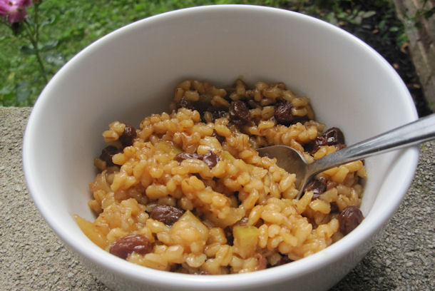
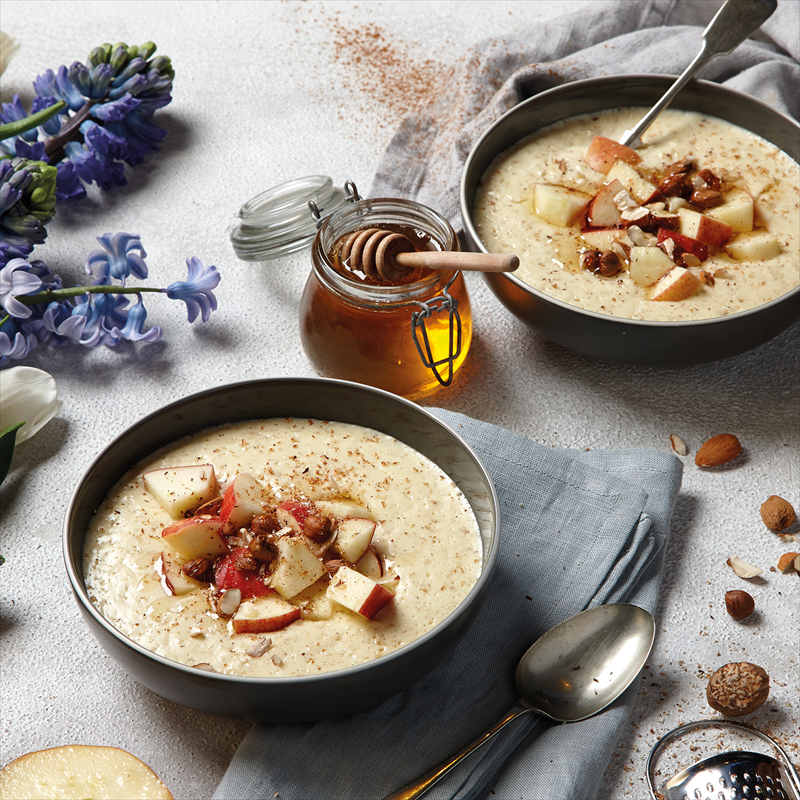
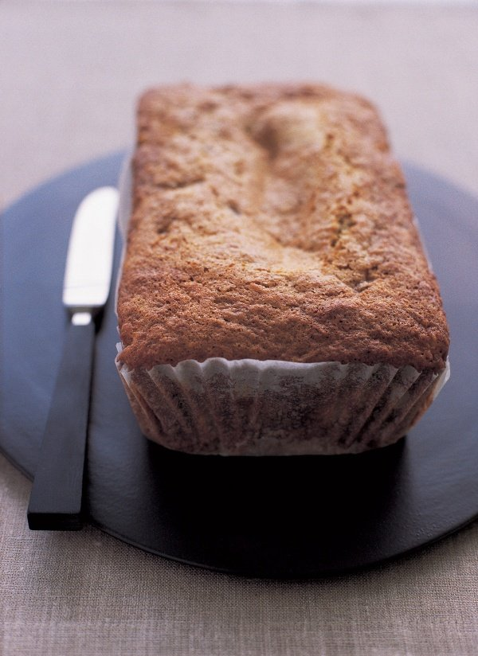
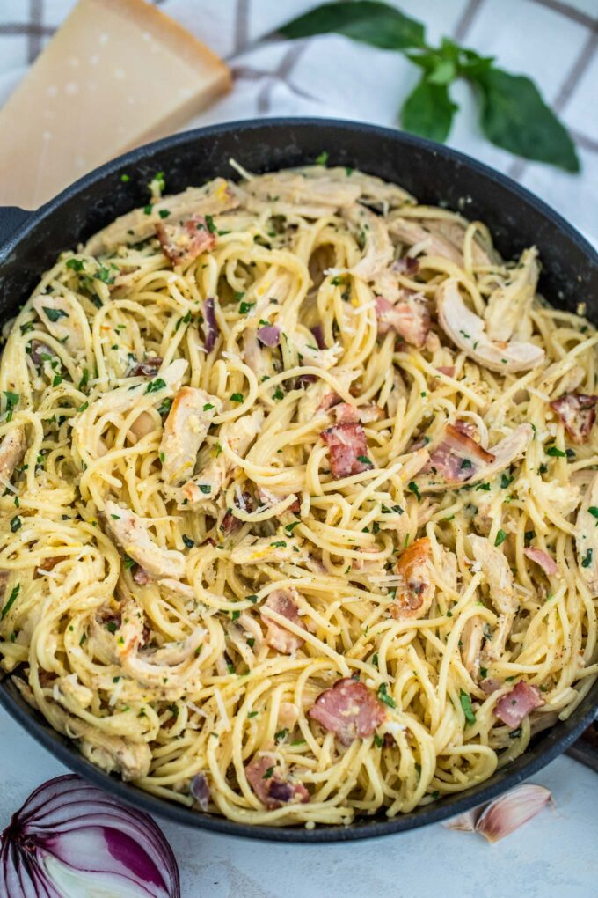
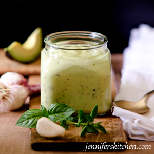
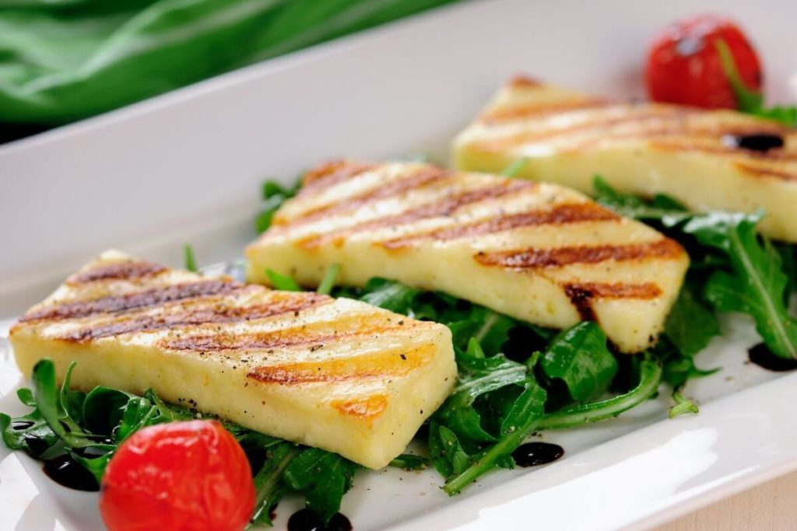
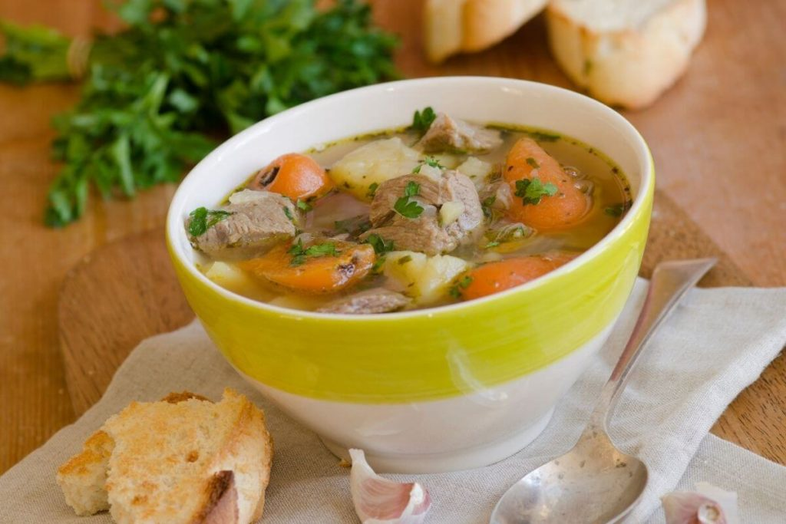
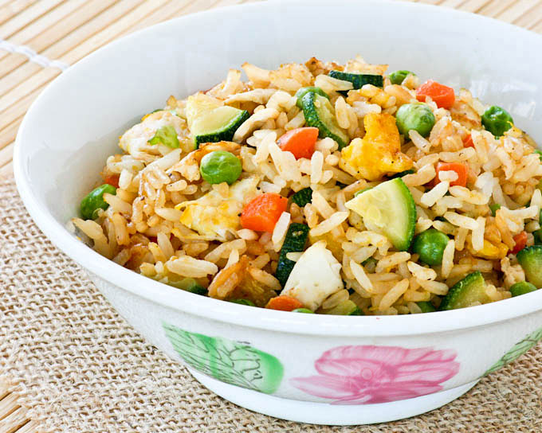

All Recipes
Apple and Barley Pudding
 Some of the best Irish dishes are the simplest ones, such as Apple and Barley Pudding. With good quality ingredients, not fancy but simply prepared, Irish cooks respect basic flavors and the way the ingredients interact with other foods.The choice of which apple to use is pretty much up to you; chances are, any variety will eventually melt anyway! I used my favorite, Golden Delicious, but even that one melted towards the end. Can’t really blame it, after getting cooked and moved around for so long…
click here for recipeAmerican Cookies
This recipe comes with an urban myth: A woman in New York met a friend at a small coffee shop, where they ordered drinks and cookies. They liked the cookies so much that she asked for the recipe. The owner of the coffee shop said that she could have the recipe, but she would have to pay something for it. The woman agreed, and paid for the coffee, cookies and the recipe on her credit card. When she got her next credit card statement, she realised that she had been charged a massive $200 for the recipe. She was furious! She called the restaurant, which refused to refund the money, saying that it was a fair price for the recipe. The woman said that, for that price, she must have bought the copyright for the recipe and she would send it out worldwide. She passed the recipe on to everyone she knew, and asked them to do the same.So here it is; pass it on!
Apple tart
A traditional French apple tart recipe that is easy to make at home and is so tasty everyone will want more! It is so good eaten either hot or cold and so is very versatile. A good standby for family meals or for entertaining your friends. One of our favourite French dessert recipes as I am sure it will be yours too once you have tried it. Apples are plentiful all year round nowadays but of course if you make the most of local ones when in season you will have the most fruitful of puddings!
click here for recipeApple Spiced Porridge
 Start the year off the right way with the latest dishes from our collaborator Gordon Ramsay’s new book: Ultimate Fit Food. To celebrate its release, we’re giving you two breakfast recipes to enjoy cooking and eating - to leave you in great shape whatever your fitness goals.These Ultimate Fit Food Breakfast recipes are the perfect way to start your morning and are ideal for maintaining a healthy weight, keeping blood sugar levels stable and boosting your intake of a wide variety of nutrients – giving you the energy you need for the day ahead.
click here for recipeBanana Bread
 I haven't done a tremendous amount of fiddling with this, but I did once make it, for friends who are more chocolate-crazed than I am, by replacing 25g / 3 tablespoons of the flour with good cocoa powder (not drinking chocolate) and adding 100g / 4oz of dark chocolate, cut up into smallish chunks. And you could just as easily use the chocolate chips sold in the baking aisle of supermarkets.If you're thinking about giving this cake to children, don't worry, the alcohol doesn't pervade: you just end up with stickily, aromatically swollen fruit.For US cup measures, use the toggle at the top of the ingredients list.
click here for recipeChicken Carbonara
 Chicken Carbonara is a creamy, sinful, and indulgent dish. Made with egg yolks and loads of cream, this recipe can easily be a staple comfort food of the family! We love to make delicious and creamy pasta recipes for dinner. Some of our favorites once are Creamy Garlic Parmesan Shrimp Pasta, Instant Pot Tuscan Chicken Pasta, and Instant Pot Philly Cheesesteak Pasta.Chicken Carbonara is made with the meat of roasted chicken, egg yolks, and loads of cream. What we love about this recipe is it can be done in under half an hour. And the finished dish would look like you have slaved over the stove for a long time too. This recipe can also be done with leftover roasted chicken.
click here for recipeDressing
 Even most “fat-free”, “lite”, and/or “low-calorie” salad dressings have ingredients in them that contribute to weight gain. Here are some healthy, clean-eating, vegan dressings that will help shed those extra pounds.Salads can be a great help for your weight loss plan; but what do you do if you don’t like salad? Well, my solution is to drown that salad in a delicious salad dressing.But, doesn’t that kind of negate all the healthy benefits of eating a salad? Not with the right kind of dressing!
click here for recipeEnglish muffins
 There is really no better vehicle for melted butter than the craggy dips and toasted peaks of an English muffin. I think we can all agree on this. Have you ever tried making them yourself? They’re surprisingly straightforward! And since the dough is best when made ahead and refrigerated overnight, they’ve become one of my favorite treats to make over long, lazy weekends.
Here’s a step-by-step recipe for making a batch of English muffins for you and anyone lucky enough to be invited to your table.A Slow Rise Makes Better English Muffins
I’ve done a lot of experimenting with my beloved English muffins over the years, and I’ve found that the best flavor and most craggy interior texture comes from a long, slow rise. First, I make what’s called a “starter,” which is really just a mini batter of flour, water, and yeast. Let this bubble for anywhere from an hour to 12 hours, and then mix up the dough. If you have some active sourdough starter, use that instead of yeast for a nice, sour tang to the muffins.
Second, I recommend mixing up the dough and letting it slowly rise in the fridge overnight. In fact, you can make the dough and keep it in the fridge for up to four days — the flavor just gets better and takes on a bit of lovely sourness, even if no sourdough was actually used.
You can also make these English muffins straight through if you like — let the starter get bubbly, then mix it with the dough. Let the dough rise until doubled in bulk, and then you’re good to go. Muffins made all in one go like this will have a very mild flavor and a softer texture.
There is really no better vehicle for melted butter than the craggy dips and toasted peaks of an English muffin. I think we can all agree on this. Have you ever tried making them yourself? They’re surprisingly straightforward! And since the dough is best when made ahead and refrigerated overnight, they’ve become one of my favorite treats to make over long, lazy weekends.
Here’s a step-by-step recipe for making a batch of English muffins for you and anyone lucky enough to be invited to your table.A Slow Rise Makes Better English Muffins
I’ve done a lot of experimenting with my beloved English muffins over the years, and I’ve found that the best flavor and most craggy interior texture comes from a long, slow rise. First, I make what’s called a “starter,” which is really just a mini batter of flour, water, and yeast. Let this bubble for anywhere from an hour to 12 hours, and then mix up the dough. If you have some active sourdough starter, use that instead of yeast for a nice, sour tang to the muffins.
Second, I recommend mixing up the dough and letting it slowly rise in the fridge overnight. In fact, you can make the dough and keep it in the fridge for up to four days — the flavor just gets better and takes on a bit of lovely sourness, even if no sourdough was actually used.
You can also make these English muffins straight through if you like — let the starter get bubbly, then mix it with the dough. Let the dough rise until doubled in bulk, and then you’re good to go. Muffins made all in one go like this will have a very mild flavor and a softer texture.
French Onion Soup
 Is there anything more comforting on a chilly day than a hot bowl of French onion soup? Especially with a thick slice of toasted bread loaded with melty Gruyere cheese and lots of caramelized onions.There are two essential components of a good French onion soup.
The first is the stock. Your soup will only be as good as the stock you are using. This soup traditionally is made with beef stock, though sometimes a good beef stock can be hard to come by and expensive to make.If you use boxed stock, taste it first! If you don't like the taste, don't use it. (If you cook a lot of beef or beef roasts, save the scraps and freeze them to make a stock with later.)Much of the success of this soup depends on the stock that you are using, and stock varies tremendously in its taste. Depending on your stock, you may need to bump up the flavor with some beef bouillon (we recommend "Better than Bouillon brand"). Taste the soup before putting it in the oven, and if it needs more seasoning, don't be afraid to add more!
Is there anything more comforting on a chilly day than a hot bowl of French onion soup? Especially with a thick slice of toasted bread loaded with melty Gruyere cheese and lots of caramelized onions.There are two essential components of a good French onion soup.
The first is the stock. Your soup will only be as good as the stock you are using. This soup traditionally is made with beef stock, though sometimes a good beef stock can be hard to come by and expensive to make.If you use boxed stock, taste it first! If you don't like the taste, don't use it. (If you cook a lot of beef or beef roasts, save the scraps and freeze them to make a stock with later.)Much of the success of this soup depends on the stock that you are using, and stock varies tremendously in its taste. Depending on your stock, you may need to bump up the flavor with some beef bouillon (we recommend "Better than Bouillon brand"). Taste the soup before putting it in the oven, and if it needs more seasoning, don't be afraid to add more!
Goats Cheese and Tomato Quiche
This goat cheese spinach sun-dried tomato quiche uses my favorite quiche recipe as the base. It’s salty, savory, creamy, and baked in a deliciously flaky homemade pie crust. Switch up the add-ins based on your tastes. The possibilities are endless!Quiche. Make this quiche your Easter brunch! Your comforting weekend breakfast at home. This (make-ahead!) goat cheese spinach & sun-dried tomato quiche is the quintessential breakfast dish satisfying even the biggest of appetites.What’s even better about this quiche is that it’s pretty. I mean, it’s pretty easy to throw together. Eggs, garlic spinach, milk, and creamy goat cheese with lots of sun-dried tomatoes for savory zest. All poured into a pie crust and baked. Nothing but simple, comforting breakfast food without over-complicating things.If you’re a pie crust aficionado, you’ll want to prepare a homemade pie crust for this quiche. Homemade buttery pastry underneath that savory, flavor-packed filling? Nothing compares! If making homemade pie crust has you running for the hills screaming like a wild banshee (I get it, I’ve been there) then you can certainly use store-bought pie dough. That saves time, too. But I encourage you to try it from scratch. I even have an entire tutorial on making homemade pie crust. Don’t worry, you’ve got this.By the way, you can prepare the homemade pie dough and freeze it saving you as much time as you would buying it from the store.
click here for recipeHalloumi
 Halloumi is a type of cheese made from either goat or sheep’s milk or a combination of the two. Cow’s milk may also be used in making this type of cheese.Originally from Cyprus, halloumi cheese is high in fat, rich in calcium, and a great source of vitamins A and B, as well as zinc and magnesium.Halloumi differs from other types of cheese in that it is a layered type of white cheese akin to that of mozzarella.This type of cheese tastes somewhat salty and tangy. Unlike many types of cheese, halloumi does not have a rind.It has a spongier consistency with some holes making for better brine absorption.Its texture and high melting point also make it a good cheese to fry or grill as it retains its shape.As halloumi heats up, its texture changes from rubbery to chewy and gooey, with pockets of stringy cheese melted inside.(wording from recipemaker.com)
click here for recipeIrish Stew
 Not to be confused with beef stew, traditional Irish stew contains mutton, otherwise known as sheep, or lamb.As you can tell from its name, this dish hails from Ireland.It consists of red meat, potatoes, carrots, and other root vegetables for additional layers of flavor and thickening.Irish stew’s humble beginnings trace back through Ireland’s history itself.During the olden days, Irish peasants made use of sheep and lamb they raised.They not only provided daily nutrition and sustenance but also helped the Irish to survive.They heavily relied on these animals not only for food, such as meat to eat and milk for drinking and making cheese but also for wool to fashion into clothing.Today, Irish stew is consumed around the world, especially on cold days when it can provide warmth and comfort(wording from recipemaker.com).
click here for recipeJerk Chicken
 Look at the thick sticky marinade on the chicken!Jamaican Jerk Chicken Drumsticks and Caribbean Rice with Red Beans - the strong, spicy flavours of this chicken is the best from the Caribbean! Easy to make with everyday ingredients.I’ve tried quite a few jerk chicken recipes, including from celebrity chefs. But this Oven Baked Jerk Chicken recipe by Imma from Immaculate Bites is my favourite. As soon as I saw her recipe, I knew I would try it and I’ve made it twice already. Recipes for jerk chicken, like many signature dishes of cuisines from around the world, vary wildly though they have common ingredients. What I love about Imma’s recipes is that she shares home cook versions of Caribbean recipes. Real ingredients that ordinary people can find and cooking methods for ordinary folks like me.I would love to be able to make real jerk chicken over charcoal with pimento wood. But that just ain’t gonna happen in my backyard! So I’m sticking with Imma’s oven baked version.I made these in the photo in the oven, but I’ve provided directions for the grill/BBQ as well.I served the jerk chicken with Imma’s Caribbean Rice with Red Beans. It’s sensational, the kind of rice that is so flavourful you can eat it plain.
Look at the thick sticky marinade on the chicken!Jamaican Jerk Chicken Drumsticks and Caribbean Rice with Red Beans - the strong, spicy flavours of this chicken is the best from the Caribbean! Easy to make with everyday ingredients.I’ve tried quite a few jerk chicken recipes, including from celebrity chefs. But this Oven Baked Jerk Chicken recipe by Imma from Immaculate Bites is my favourite. As soon as I saw her recipe, I knew I would try it and I’ve made it twice already. Recipes for jerk chicken, like many signature dishes of cuisines from around the world, vary wildly though they have common ingredients. What I love about Imma’s recipes is that she shares home cook versions of Caribbean recipes. Real ingredients that ordinary people can find and cooking methods for ordinary folks like me.I would love to be able to make real jerk chicken over charcoal with pimento wood. But that just ain’t gonna happen in my backyard! So I’m sticking with Imma’s oven baked version.I made these in the photo in the oven, but I’ve provided directions for the grill/BBQ as well.I served the jerk chicken with Imma’s Caribbean Rice with Red Beans. It’s sensational, the kind of rice that is so flavourful you can eat it plain.
Zucchinici Egg Fried Rice
This quick and easy Zucchini and Egg Fried Rice can be made in 20 minutes. It is much tastier and healthier than take-out.This quick and easy Zucchini and Egg Fried Rice can be made in 20 minutes. It is much tastier and healthier than take-out.I am so glad it is Friday and the weekend is just round the corner.The weather is supposed to be warmer next week and that makes me smile. I have to admit that the last two years of “milder” winters have caused my blood to “thin out” and so the cold seems a little harder to bear this year. So far, we have not had a ton of snow but it has been bitterly cold. Hopefully, we will not be slammed with a snow storm in the coming days as there is still two more months of winter left. The good thing though about living in a temperate climate is that the seasons do change and spring will soon be here.I am thankful for modern amenities like furnaces and heaters. While it may be cold outside, it is warm and cozy in the house. I like to set the indoor temperature in the mid to high 60 degrees and put on a sweater. It feels very comfortable that way, and we can pretty much go about doing most things and eating most foods as in the summer time.This quick and easy Zucchini and Egg Fried Rice can be made in 20 minutes. It is much tastier and healthier than take-out. Fried Rice is Comfort Food,One of our favorite foods is fried rice. It is comfort food for my boys and I am not complaining. I have cooked up so many fried rice meals that I can almost do it in my sleep! It only takes minutes for me to whip up a batch and that includes chopping the vegetables, meat, and whatever I choose to throw into it. It also makes a great lunchbox meal with a side of fresh fruits.
click here for recipeFor information on our recipes please enter the following information:
*Indicates a required field